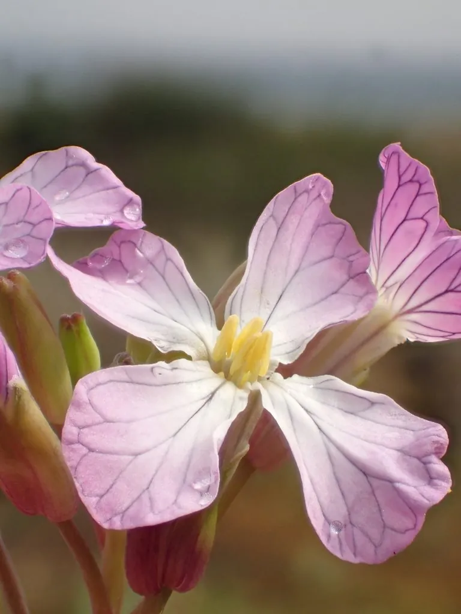

农作物与经济植物 · 植物界
萝卜 Raphanus sativus

萝卜的肉质根脆嫩多汁，可生食、炒食、炖汤和腌制，种子可入药，是南北方广泛栽培的重要根菜作物。
- 分类
- 门被子植物门纲双子叶植物纲目十字花目科十字花科属萝卜属
- 栖息环境
- 温带与亚热带的菜地，喜凉爽、光照充足与疏松深厚土壤
- 地理分布
- 原产中国与地中海一带，现中国各地广泛栽培，东亚、欧洲也有种植
- 保护级别
- 暂无评估（栽培作物）
物种志
萝卜是十字花科一二年生草本，株高 0.3–0.6 m。基生叶羽状分裂，边缘有锯齿，表面粗糙。肉质根形状有长圆柱形、球形、圆锥形等，皮色有白、红、青、紫等，肉色多为白色，脆嫩多汁，富含水分和维生素 C。花为总状花序，白色或淡紫色，四瓣十字形。
萝卜原产中国与地中海一带，中国栽培历史已有 2000 多年，是重要的根菜作物。它喜凉爽、光照充足，适宜在疏松深厚的沙壤土中种植，肉质根膨大期怕高温和干旱。萝卜可生食、炒食、炖汤、腌制，萝卜缨（叶）也可作蔬菜或饲料；种子（莱菔子）入药，有消食化积、降气化痰之效。萝卜富含维生素 C、膳食纤维和芥子油，生食有辛辣味。中国各地均有栽培，品种极为丰富。
形态与习性
- 株高0.3–0.6 m
- 肉质根长圆柱、球形或圆锥形，皮色多样
- 叶羽状分裂，边缘有锯齿
- 繁殖种子繁殖
- 用途生食、炒食、炖汤、腌制
- 药用种子入药称“莱菔子”
趣味知识
- 萝卜的肉质根皮色有白、红、青、紫等多种，肉色多为白色。
- 萝卜种子入药称“莱菔子”，能消食化积、降气化痰。
- 萝卜生食有辛辣味，来自芥子油类物质。